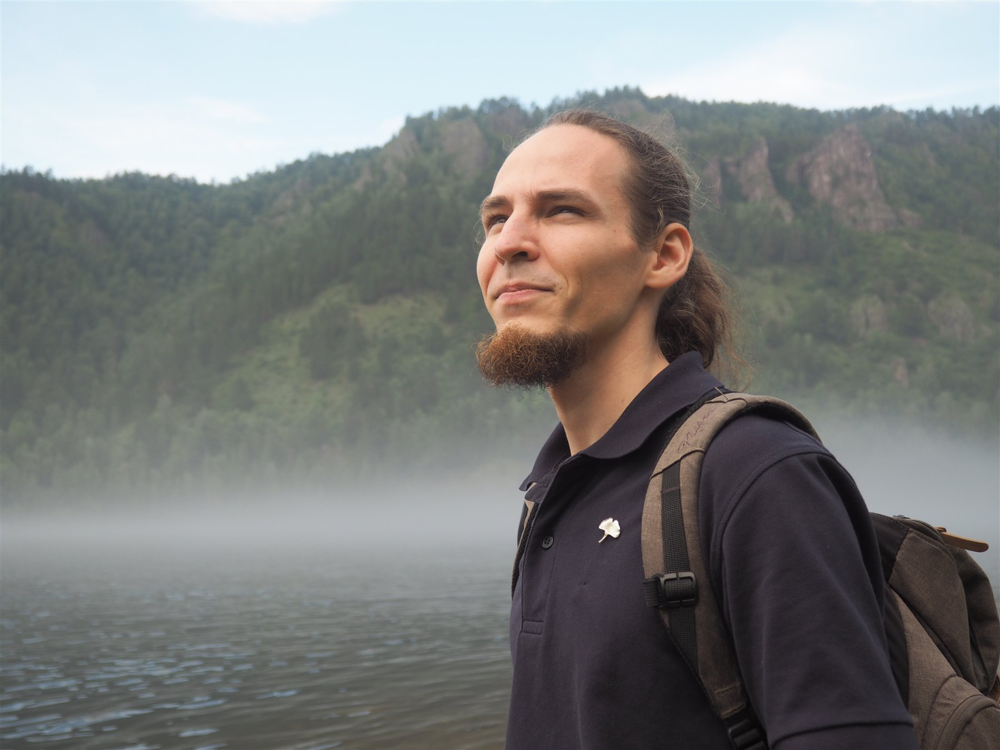
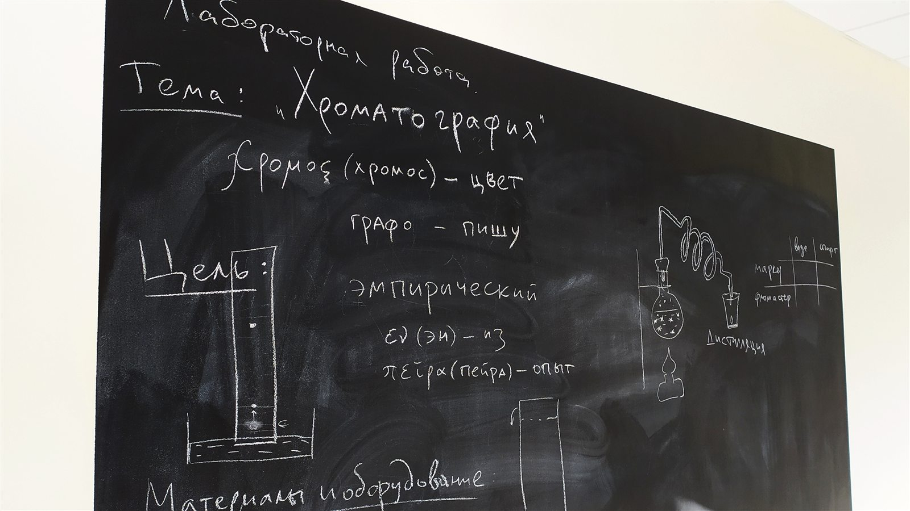
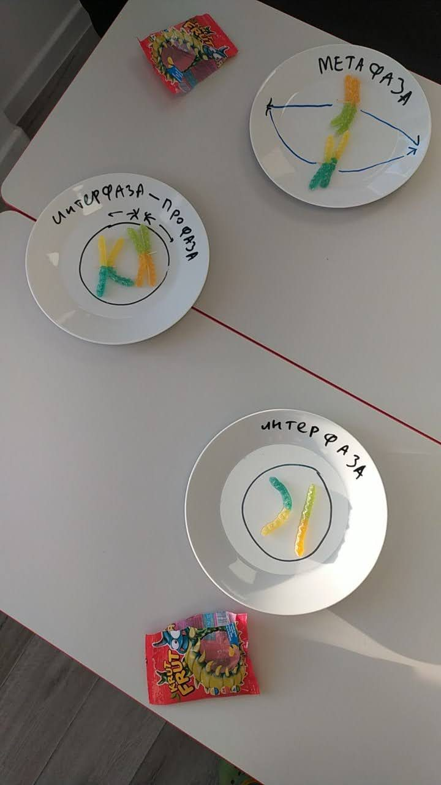
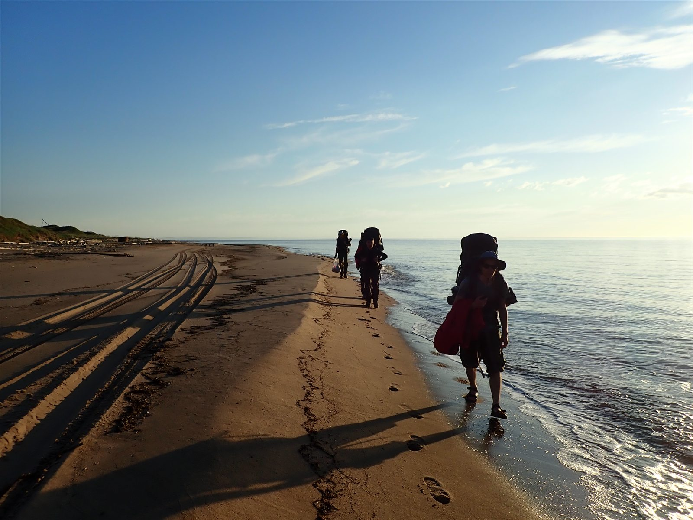
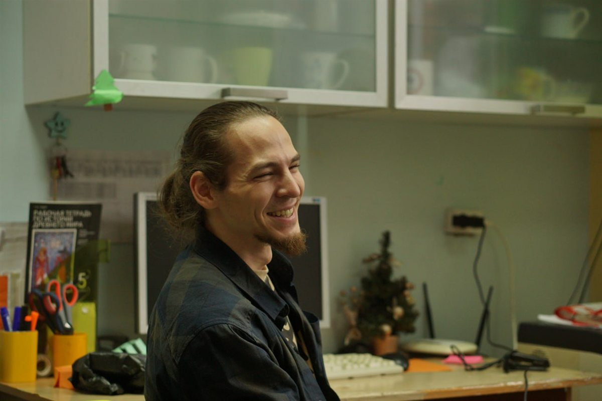

Учебное наставничество
Когда вопрос не укладывается в один предмет: что интересно, куда поступать, как не бросать подготовку и научиться организовывать работу самостоятельно.
Наставничество и занятия · 7–11 классы
Я Никита Созонов, преподаватель и исследователь. Помогаю понять сложные темы, подготовиться к экзаменам, выбрать профиль и выстроить план подготовки к поступлению.

Как можно заниматься
Один — для вопросов об учёбе в целом. Второй — для занятий по конкретному предмету.
Когда вопрос не укладывается в один предмет: что интересно, куда поступать, как не бросать подготовку и научиться организовывать работу самостоятельно.
Биология, химия или английский: школьная программа, ОГЭ и ЕГЭ, олимпиады, отдельная сложная тема или углублённое изучение.
Учебное наставничество
Необязательно заранее формулировать «запрос». Можно рассказать, что не получается, что интересно или какое решение сейчас нужно принять. Дальше вместе уточним задачу.
«Мне нравится биология, но я не знаю, хочу ли заниматься ею дальше»
Обсудим, что именно нравится. Подберём тему, книгу, курс или небольшой проект, чтобы попробовать биологию глубже.
«Не могу выбрать профиль и пока не понимаю, куда поступать»
Сравним варианты и составим план поступления. Если получится, найдём студента или специалиста, у которого можно спросить об учёбе и профессии из первых уст.
«Я понимаю, что надо делать, но всё время откладываю»
Разберёмся, что мешает начать. Попробуем несколько способов самоорганизации и управления временем, а затем выберем те, которыми удобно пользоваться.
«Хочу сделать свой проект, но не знаю, с чего начать»
Придумаем вопрос, на который реально успеть ответить, найдём источники и инструменты, разобьём работу на этапы и разберём трудности по ходу.
«Я уже выбрал цель, но боюсь не успеть подготовиться»
Начнём со сроков и требований, составим план подготовки и будем отдельно обсуждать мотивацию, если она начнёт пропадать.
Если подготовка постоянно откладывается, причина не всегда в лени. Иногда задача кажется слишком большой, цель не ощущается своей или просто непонятно, с чего начать.
Посмотрим, что происходит в конкретной ситуации, подберём подходящий способ планировать время и составим выполнимый план. На следующих встречах обсудим, что получилось, где снова стало трудно и что стоит изменить.
Предметные занятия
Можно разобрать одну непонятную тему или заниматься регулярно. Содержание и темп зависят от задачи: школьная программа, экзамен, олимпиада или углублённое изучение.
7–11 классы
8–10 классы
От начального до B2
Предметные занятия можно сочетать с наставничеством — например, заниматься биологией и параллельно планировать подготовку к поступлению.
Подход к занятиям
Новую тему легче понять, если увидеть её связь с повседневной жизнью и уже знакомыми идеями. Поэтому мы не только запоминаем определения: разбираем происхождение терминов, строим схемы и модели, читаем научно-популярные тексты и работаем с задачами прошлых лет.
Примеры из повседневной жизни часто помогают лучше понять материал. Так, разговор о кислотности и щёлочности иногда объясняю на примере шампуня и бальзама для волос, а осмос — на примере того, почему посоленные овощи быстро дают сок.
Схема или простая модель иногда объясняет лучше, чем определение. Если игровой формат помогает понять принцип, использую готовое задание или собираю небольшой интерактивный модуль под конкретную тему.
Происхождение слова нередко подсказывает его смысл. Использование этимологии для создания ассоциативных цепочек помогает запоминать не только новую лексику на английском, но и сложные естественно-научные термины.
Учимся точнее формулировать поисковый запрос, сравнивать несколько материалов и отличать данные от интерпретации автора. Это помогает развивать критическое мышление и не принимать первое найденное объяснение на веру.
На экзаменационных и олимпиадных заданиях видно, где тема уже понятна, а где остался пробел. После решения разбираем ход мысли, а не только сверяем ответ.



Полевые работы · 2018

Обо мне
Работал со школьниками 5–11 классов в частных и онлайн-школах, вёл индивидуальные занятия, университетские семинары и полевую практику.
Преподавал биологию, химию, английский и информатику. Основной возраст моих учеников — 7–10 классы.
Вёл семинары и летнюю практику по зоологии беспозвоночных, а также семинары по генетике в летней школе СУНЦ НГУ.
Прошёл курсы допсихологической поддержки в НГУ, а во время учёбы — курс возрастной психологии и психологии развития на факультете психологии НГУ. Эти знания помогают учитывать возрастные особенности подростков и понимать границы работы наставника.
Дважды становился победителем Всесибирской олимпиады по биологии; индивидуально готовил учеников к олимпиадам по химии.
Окончил магистратуру по направлению «цитология и генетика», а аспирантуру — по направлению «общая биология и экология». Готовлюсь к защите диссертации по палеонтологии. Также работал в сфере нейрофизиологии и вычислительной нейробиологии.
Использую Python и R для анализа данных, читаю и пишу научные тексты на английском, выступал на международных конференциях.
Вне работы путешествую, играю на гитаре и пианино, читаю о философии и культуре, пишу стихи и собираю небольшие программы и учебные инструменты.
Бывшие ученики
Некоторые мои бывшие ученики позже выбрали биологическое, естественно-научное или IT-направление и поступили в ФМШ, на ФЕН НГУ и в ВКИ. Они рассказывали, что знания с уроков биологии и химии пригодились им уже на новом месте.
Я не считаю их выбор и поступление своей заслугой — это результат их собственной работы.
Стоимость
Первая встреча
На встрече обязательно участвует подросток. Родитель может присоединиться. Познакомимся, обсудим задачу и решим, какой формат подойдёт.
Записаться на знакомство →Наставничество · 7–11 классы
2 000 ₽/ 60 минут
В стоимость входят подготовка к встрече, подбор материалов и корректировка плана.
Обсудить задачу →Предметы
Онлайн, 60 минут. Очные встречи в Академгородке — по договорённости.
Выбрать предмет →Перед началом
Встречаемся на 30 минут, обсуждаем ситуацию и подходящий формат. Подросток участвует обязательно, родитель может присоединиться. Только с родителем такую встречу не провожу.
Готовая цель необязательна. Первые встречи можно посвятить интересам, трудностям и пробам. Важно, чтобы сам подросток был согласен участвовать.
Да. Для предметных занятий достаточно конкретной задачи: разобраться в теме, подготовиться к контрольной, экзамену или олимпиаде. Наставничество — отдельный формат.
На предметных занятиях смотрим, может ли ученик объяснить тему и самостоятельно решить задания. На наставничестве — пробует ли он выбранные варианты, делает ли то, о чём договорились, и всё меньше ли нуждается в помощи с планированием.
В начале можно вместе обсудить ожидания. Дальнейшая работа опирается прежде всего на запрос подростка. Отдельно договоримся, как и когда рассказывать родителю, как идут занятия.
Нет. Мы работаем с учебными задачами, интересами и организацией занятий. Я могу поддержать в трудный момент, но не провожу психологические консультации или терапию.
Связаться
Напишите, сколько лет подростку, с каким вопросом он приходит и какого результата хотелось бы. Если точной формулировки пока нет, достаточно описать ситуацию своими словами.